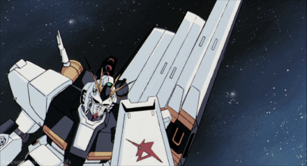
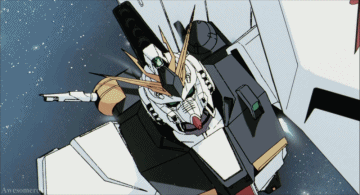

Nu Gundam
More Info
Nu Gundam, or the RX-93 v Gundam, appears in the movie Mobile Suit Gundam: Char's Counterattack, following its first main Protaganist Amuro Ray once again, attempting to finish a war and his final fight against his first and last enemy, Char Aznable. Amuro himself created its basic design, which is a combination of the original Gundam, Zeta Gundam, and Double Zeta Gundam.